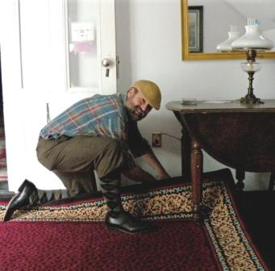

|
|
||||
|
John Burrows
Prospective: Mr. Burrows has worked alongside all of the major producers of period floor coverings and can recommend and specify a variety of period products. He is the American representative for The Grosvenor Wilton Company Ltd., the premier weaver of reproduction Wilton and Brussels carpets. Lectures: Credentials: Academic degrees in architectural history with focus on 19th century design in the Midwest, South, and East Coast, and work experience at the forefront of the Victorian Revival in California. John has worked with historic preservation and museum projects from Maine to Florida, Washington State to Southern California, and in Alaska and Hawaii. His initial studies and work in the Midwest give him a particular knowledge of the architectural and design history of this region of America. Graduate work in Virginia provided the background for his knowledge of Southern history and design. Along the Eastern Seaboard he has worked on the majority of major museum restorations since the mid 1980s. Mr. Burrows studies and work have been wide ranging. He has extensive background in the history of floor coverings in America from the Georgian to the early Modern eras. John has worked with projects from the mid-18th century, and has provided the majority of pile carpets installed in Federal period museum interpretations during the past 25 years. He brings the same attention to authentic and site appropriate period design for projects of Greek Revival, Italianate, Gothic Revival, and the Queen Anne and Colonial Revival styles. Mr. Burrows knowledge of regional history, 19th century domestic economics, trade practices, architectural style and period design styles dovetails with extensive experience with the only substantial archive of period carpet designs. For over 30 years Mr. Burrows has studied in the English and American Arts & Crafts Movement. John is a scholar of the original marketing and use of William Morris' products in America, and he has presented lectures on this subject in both the US and in England. Burrows research on Morris' woven carpet designs has resulted in returning a number of patterns to production, and he supplied carpets for Morris' Kelmscott Manor in Oxfordshire, England. He also is the first scholar to explore the Old Colony Style, an interconnection of the Arts & Crafts Movement, Queen Anne Revival and the Colonial Revival. Hometown: College: Docent: Graduate School: State Architectural Historian of South Dakota Design Consultant for Bradbury & Bradbury Art Wallpapers Founder of J.R. Burrows & Company (established 1985) |
||||
|  |
List of Historical Floor Covering Consulting, Sales & Installations
Back to J.R. Burrows & Company Main Page